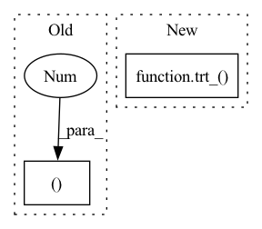

Pattern ID :39794

Before Change
if not support_dynamic_shape:
layer.reshape_dims = (-1, output.shape[-1])
else:
layer.reshape_dims = (output.shape[0], -1, output.shape[-1])
output._trt = layer.get_output(0)
After Change
layer.reshape_dims = (-1, input.shape[-1], 1)
else:
input_shape_trt = ctx.network.add_shape(input_trt).get_output(0)
one_trt = trt_(ctx.network, torch.tensor([1],dtype=torch.int32).to(input.device))
new_input_shape_trt = ctx.network.add_concatenation([input_shape_trt, one_trt]).get_output(0)
layer = ctx.network.add_shuffle(input_trt)
layer.set_input(1, new_input_shape_trt)
In pattern: SUPERPATTERN
Frequency: 3
Non-data size: 2
Instances
Fragment ID: 113349457
Project Name: grimoire/torch2trt_dynamic
Commit Name: 844f085bd0c42caef13b5e22357929f9fab9129d
Time: 2020-05-12
Author: streetyao@live.com
File Name: torch2trt/converters/Conv1d.py
M Class Name: AnonimousClass
N Class Name: AnonimousClass
M Method Name: convert_Conv1d(1)
N Method Name: convert_Conv1d(1)
M Parent Class:
N Parent Class:
M File Name: torch2trt/converters/Conv1d.py
N File Name: torch2trt/converters/Conv1d.py
M Start Line: 7
M End Line: 55
N Start Line: 7
N End Line: 63
'>
Before Change
if len(input.shape) == 2:
layer.reshape_dims = (input.shape[0], input.shape[1], 1, 1)
else:
layer.reshape_dims = (input.shape[0], input.shape[1], input.shape[2], 1)
layer = ctx.network.add_scale(layer.get_output(0), trt.ScaleMode.CHANNEL, bias, scale, power)
After Change
layer.reshape_dims = (input.shape[1], input.shape[2], 1)
else:
input_shape_trt = ctx.network.add_shape(input_trt).get_output(0)
one_trt = trt_(ctx.network, torch.tensor([1],dtype=torch.int32).to(input.device))
if len(input.shape)==2:
new_input_shape_trt = ctx.network.add_concatenation([input_shape_trt, one_trt, one_trt]).get_output(0)
else:
new_input_shape_trt = ctx.network.add_concatenation([input_shape_trt, one_trt]).get_output(0)
'>
Fragment ID: 113349456
Project Name: grimoire/torch2trt_dynamic
Commit Name: 844f085bd0c42caef13b5e22357929f9fab9129d
Time: 2020-05-12
Author: streetyao@live.com
File Name: torch2trt/converters/BatchNorm1d.py
M Class Name: AnonimousClass
N Class Name: AnonimousClass
M Method Name: convert_BatchNorm1d(1)
N Method Name: convert_BatchNorm1d(1)
M Parent Class:
N Parent Class:
M File Name: torch2trt/converters/BatchNorm1d.py
N File Name: torch2trt/converters/BatchNorm1d.py
M Start Line: 7
M End Line: 42
N Start Line: 7
N End Line: 46
'>
Before Change
output = ctx.method_return
// add broadcastable scalar constants to network
scalar_shape = (1,) * len(input.shape)
eps_trt = add_trt_constant(ctx.network, eps * torch.ones(scalar_shape, dtype=input.dtype))
p_trt = add_trt_constant(ctx.network, p * torch.ones(scalar_shape, dtype=input.dtype))
p_inv_trt = add_trt_constant(ctx.network, torch.ones(scalar_shape, dtype=input.dtype) / p)
After Change
output = ctx.method_return
// add broadcastable scalar constants to network
input_trt, eps_trt, p_trt, p_inv_trt = trt_(ctx.network, input, eps, p, 1.0 / p)
// compute norm = sum(abs(x)**p, dim=dim)**(1./p)
norm = ctx.network.add_unary(input_trt, trt.UnaryOperation.ABS).get_output(0)
norm = ctx.network.add_elementwise(norm, p_trt, trt.ElementWiseOperation.POW).get_output(0)
'>
Fragment ID: 113349462
Project Name: grimoire/torch2trt_dynamic
Commit Name: 0bfe27df7628b009ec2ebc990bc5ba2304ce1d7a
Time: 2019-09-30
Author: jwelsh@nvidia.com
File Name: torch2trt/converters/normalize.py
M Class Name: AnonimousClass
N Class Name: AnonimousClass
M Method Name: convert_normalize(1)
N Method Name: convert_normalize(1)
M Parent Class:
N Parent Class:
M File Name: torch2trt/converters/normalize.py
N File Name: torch2trt/converters/normalize.py
M Start Line: 8
M End Line: 20
N Start Line: 8
N End Line: 17